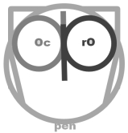

Castellano
Castellano
OpenProdoc is an ECM Document Management System with the characteristics:
What is new in version 1.0:
- Task Support
- Scheduled of event triggered.
- Delete and purge of old documents/cases
- News and purge Reports
- Scheduled Import/Export
- Automatic update and conversion
- Extended Architecture for easier administration and more security.
- Added support for storage in Amazon AWS S3 (and API compatible systems as Atmos and OpenStack)
- Added interface in Catalan language.
What is new in version 0.8:
- Thesaurus Support
- Complete Thesaurus management.
- Skos-rdf standard support for import-export.
- Multiple thesaurus.
- Validation of selected metadata against thesaurus.
- Modification of definitions already in use.
- Import of document scanned and classified in Kofax Capture or Abbyy Flexicapture
OpenProdoc maintains its characteristics:
- A complete portable version (Linux, Windows, Mac)
- Multi-platform (Java)
- Multi-database (Derby, MySQL, Oracle, DB2, PostgreSQL, SQLServer, SQLLite, HSQLDB)
- Low requirements for the engine (can work without a J2EE server)
- Several ways for Authentication (Ldap, DDBB, OS, Own system)
- Different ways to store documents (FileSystem, BLOB,ftp, Reference)
- Object oriented definitions for documents and folders (including inheritance)
- Fine granularity of administration and permissions, allowing delegation of different functions.
- Multi-language (English, Spanish and portuguese)
- Thin (Web) and Thick (Swing) Clients
- Free and OpenSource